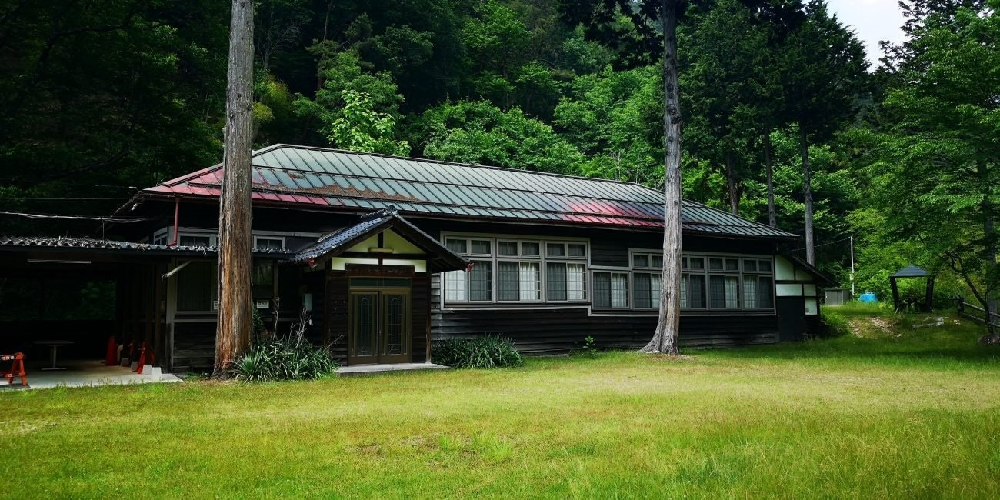
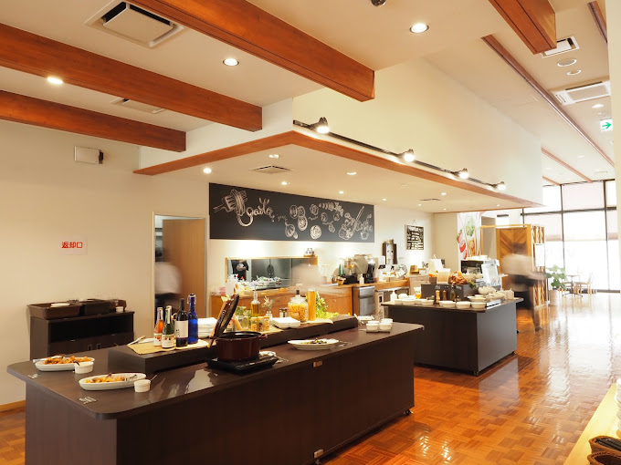
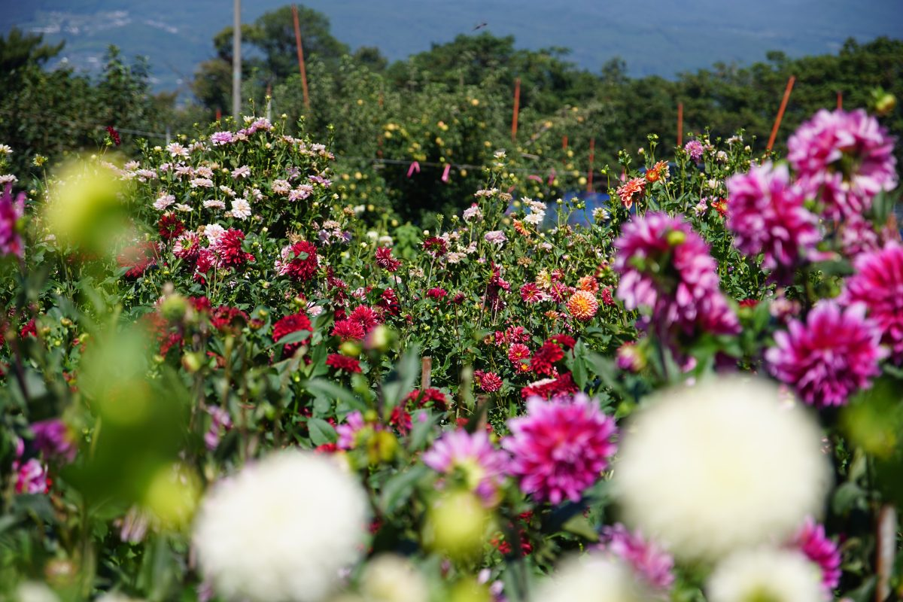

豊丘村
名産品
-
松茸
堀越まつたけ観光という企画があります。松茸のコース料理を食べられます！
-
果物
新鮮で美味しいです。たくさんの農園があり、果物狩りができるところが多くあります。
-
たけのこ
タケノコ狩りが人気です。ぜひタケノコ狩りを楽しんでみてください！
みどころ3選

とよおかまつり
小さな村の、大きなお祭り
たくさんの屋台やイベントがあります！2023年には、スカイランタンを空にあげる企画もありました。
てっぺん公園
標高800Mから豊丘村を一望できます！ほうきやデッキブラシを使い、空を飛ぶ写真が撮れます！
アクセス：〒399-3202 長野県下伊那郡豊丘村神稲
引用 とよおか旅時間

野田平キャンプ場
自然がいっぱいの場所です。旧野田野平分校の校舎が残っており、管理棟としてイベントに使われることもあるそうです。
アクセス：〒399-3202 長野県下伊那郡豊丘村神稲12523-1
引用 とよおか旅時間
ギャラリー
豊丘村の風景や名所です。

ベジフルキッチン 野菜の地産地消のレストランです。ヘルシーな料理をビュッフェ形式でたべられます。 引用 とよおか旅時間
林公園 かきっこ公園とも言います。絶景です。 引用 とよおか旅時間
豊丘村のマスコットキャラクター「だんQくん」マツタケ一本分の身長の男の子。とってもかわいいです！ 引用 豊丘村だんQくん自己紹介

豊丘ダリア園 たくさんの花が咲いています。 引用 とよおか旅時間
観光スポット
豊丘村にぜひいらしてください！